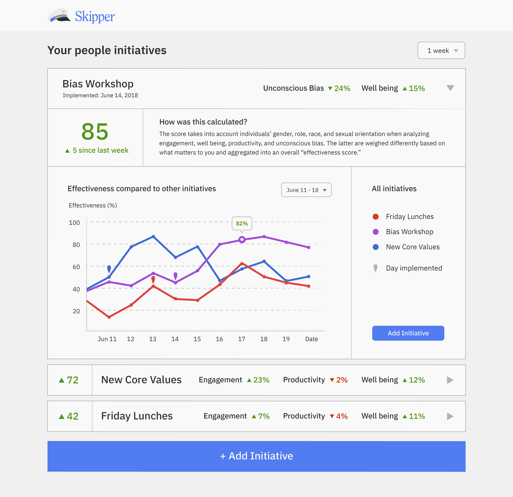
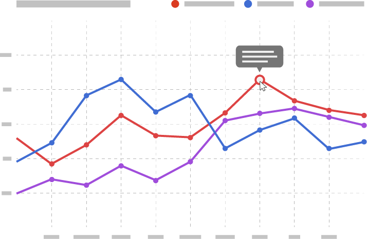

People managers use Skipper's initiative dashboard in instances like: estimating the impact of office lunches on well being and productivity or deciding which benefits package has the best return on investment.

Measure what matters.
Skipper lets you see how less tangible people decisions (i.e. office lunch programs) affect the bottom line.

AI that's explained in English.
Get quick explanations about how we calculate the numbers, what they mean, and why they matter.
Wide platform support.
Skipper integrates with task management tools, HR software, messaging platforms like Slack, Gmail and more.
Better than surveys.
No more nagging your team to fill out surveys. Data is collected and analyzed in the background so you can focus on building a better workplace.
Your data, your policies.
Skipper never stores personal or confidential information, and you choose how data is analyzed and collected. We take your employees' privacy very seriously, and encourage you to read our privacy policy.
Our product builds on years of research done at world class institutions like Stanford, USC, Google, and more. We’ve included some of the foundational papers informing our findings below.
Skipper is in the early stages of development, and we'd love to partner with you for a beta test. You'll get to request new features and learn from the insights we've gathered while creating this tool.